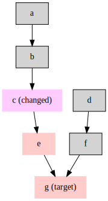

Milkshake
Experimental prototype: combine Dhall, Shake and FSNotify to create a generic build system that triggers on filesystem events.
References
Tutorial
Milkshake uses the Dhall language to specify dependencies between actions. In the most basic operation, we have Target and Action. A Target is usually one or more files, while an Action is a shell script that would generate said Target, after satisfying a set of dependencies (also Target).
The resulting configuration is a list of Action. Since we will add other forms of statements later on, we use some Dhall functions to write out actions. For example, to create a file hello.txt and consequently put it in all caps, could be done as follows:
file:say-hello.dhall
let ms = https://raw.githubusercontent.com/entangled/milkshake/master/data/Milkshake.dhall
in [ ms.fileAction "hello.txt" ([] : List Text) ''
echo "Hello, World" > hello.txt
''
, ms.fileAction "HELLO.TXT" ["hello.txt"] ''
tr a-z A-Z < hello.txt > HELLO.TXT
''
, ms.mainAction ["HELLO.TXT"]
]milkshake -1 ./say-hello.dhallRules
Because it is not so nice to write out every action explicitely, we can define rules. A rule is a function from input targets to output targets. A rule can be triggered by calling it:
file:hello-again.dhall
let ms = https://raw.githubusercontent.com/entangled/milkshake/master/data/Milkshake.dhall
let Text/concat = https://prelude.dhall-lang.org/Text/concat
in [ ms.fileAction "secret.txt" ([] : List Text) ''
echo "Uryyb, Jbeyq!" > secret.txt
''
, ms.fileRule "rot13" (\(tgt : Text) -> \(deps : List Text) -> ''
tr a-zA-Z n-za-mN-ZA-M < ${Text/concat deps} > ${tgt}
'')
, ms.fileCall "rot13" "message.txt" ["secret.txt"]
, ms.mainAction ["message.txt"]
]Includes
Includes allow one to incorporate the contents of one Milkshake file into an other. The nice thing is that the include can be the result of an action. As an example we have here a template that takes a number as an argument:
file:template.dhall
let ms = https://raw.githubusercontent.com/entangled/milkshake/master/data/Milkshake.dhall
in \(x : Natural) ->
[ ms.fileAction "answer.txt" ([] : List Text)
''
echo "${Natural/show x}" > answer.txt
''
]The main file imports the generated include
file:include.dhall
let ms = https://raw.githubusercontent.com/entangled/milkshake/master/data/Milkshake.dhall
in [ ms.fileAction "include.dhall" ([] : List Text)
''
dhall <<< "./template.dhall 42" > include.dhall
''
, ms.include "include.dhall"
, ms.main ["answer.txt"]
]Watches
Milkshake can set a number of watches to trigger a file to be built.
file:write-secret.dhall
let ms = https://raw.githubusercontent.com/entangled/milkshake/master/data/Milkshake.dhall
in [ ms.fileRule "rot13" (\(tgt : Text) -> \(deps : List Text) -> ''
tr a-zA-Z n-za-mN-ZA-M < ${Text/concat deps} > ${tgt}
'')
, ms.fileCall "rot13" "secret.txt" ["message.txt"]
, ms.watch ["message.txt"] (ms.Target.File "secret.txt")
]Now, run:
milkshake ./wait.dhallThis will always keep your encoded message up-to-date!
Milkshake
A normal build system is mostly file-system based. Every task is designated a target file and a list of dependencies. When a file somewhere down the line is updated, you rerun make and only the affected part of the dependency tree is updated, like so:

This simple principle can be written down in a Makefile
«example-makefile»
b: a
<<create-b-from-a>>
e: b c
<<create-e-from-b-and-c>>
f: d
<<create-d-from-f>>
g: e f
<<create-g-from-e-and-f>>All dependencies in Figure {@fig:dependency-graph} are listed in <<example-makefile>> including the recipes for each step (in the shape of some shell script). Since we’re committed to a Dhall configuration file, we need to write down a similar structure in the Dhall language.
Cases / Persona
Me
A theorist involved in modelling (astro)physical systems.
Needs:
- A model, a code: Entangled handles this beautifully.
- Building the code: we use a
Makefile, or alternativelymesonto coordinate building C++. For new projects Rust may be a better choice and building is handled bycargo. The availability of build systems in modern languages obliviates the need for complicated build system functionality in Entangled. - Running the code:
- traditionally in bash
- more complicated workflows: link C++ to Python interface, build a notebook
- Can we encapsulate some of the workflow in the text, such that the analysis merges fluently with the text?
- Visualisation:
- gnuplot
- python + matplotlib
- paraview, is it scriptable?
- blender
A minimal build system
By no means should we aim for the level of features found in GNU Make. A more approachable target is Ninja. We will still discuss these features using Make syntax.
Variables
Variables and string interpolation are supported by Dhall, so we won’t have to. In Make you would say
«compiling-c-make»
cflags := -Wall
%.o: %.c
gcc $(cflags) -c $< -o $@In Dhall this would be achieved by,
«compiling-c-dhall»
let cflags = "-Wall"
in { targets = [
{ target = "hello.o", dependencies = ["hello.c"], script = ''
gcc ${cflags} -c hello.c -o hello.o''
} ]
}Rules
A rule is a generic recipe for a set of specific targets. In the example above, there is a rule that describes how to compile a c-source file into an object file. It is a short-hand for every c-file in the distribution. We could keep the Make syntax for describing a pattern for the rule, but for the expansion we have could also use a Dhall function. Since we’re using Shake however, we can also have Shake do the expansion.
«shake-snippet»
do
"_build//*.o" %> \out -> do
let c = dropDirectory1 $ out -<.> "c"
need [c]
cmd_ "gcc -c" [c] "-o" [out]Shake supports a pattern language to match targets against a defined rule. There is no generic method of getting to the patterned name of the dependency. We could use regular expressions to achieve the same effect; not ideal but very powerful. Unfortunately, the state of regex support in Haskell is abismal. A rule definition for compiling c-files could look something like:
«rule-definition»
let buildDir = "build"
let cflags = "-Wall"
let compileC = rule "${buildDir}/%.o" "%.c"
\(out : Text) -> \(inp : Text) ->
{ target = out, dependencies = [ inp ], script = ''
gcc ${cflags} -c ${inp} -o ${out}'' }
in {
rules = [ compileC ]
}On the other hand, we could just defer these more complicated cases to a real build system. We wouldn’t need to support rules and regexes or anything. This is why we have make, cmake, autotools, meson, ninja, jam etc. right? Not to forget about workflow engines/standards like snakemake, cwl, luigi, pegasus, airflow, taverna, etc. Let’s not go down that road! (and then he did)
Phony targets
Phony targets are targets that are not identified by any file that will be created, but rather are an alias for one or more other targets.We can say any target starting with # is phony. These targets will acquire another meaning in the next section about Entangled, but I see no reason why this namespace shouldn’t double up for phony targets and code fragments.
Special to Entangled
In the case of Entangled, we have to track dependencies over fragments of code in addition to files.
We may specify a code-fragment by its identifier using # notation.
In the case of a generated target, the name will be a random generated identifier (UUID hex string), and values may be stored in the Entangled database.
Oracle rules
We need the build system to work with information from the Entangled database. We may choose to have all actions be filesystem based. That would make the workflow inspectable. However, already in current use cases, we put code into fragments without attaching them to file content, and then evaluate that either in Jupyter or by JS code injection. To work with information from the database directly, we would need to use Oracle rules in Shake.
- [ ] (nice to have) Tab-completion on code block names
Special targets
Some actions are triggered by events. By coupling a phony target to an event we can express the entire Entangled workflow in terms of the build system.
tangleon changed file<s>- update database:
entangled insert -s <s> - update target files:
entangled tangle -a - clear orphans:
entangled clear-orphans
- update database:
stitchon changed file<t>- update database:
entangled insert -t <t> - update source files:
entangled stitch -a - tangle covariant targets:
entangled tangle -a
- update database:
Given an up-to-date database we can ask Entangled for the existing dependencies. We already have the list command; now we should duplicate the gcc -MM kind of behaviour to generate a Makefile syntax dependency list on all markdown source and target files. Generating this information needs tracing back through the Markdown files in a way that is just as expensive as tangling or stitching is anyway. We could extend the functionality of entangled list to also list Markdown sources, slightly trivial, but still good to have.
- [ ] Implement
entangled list -s - [ ] Implement
entangled list -rlisting all named references
In an extended workflow, the tangle and stitch methods could also trigger compilation, publication etc.
Process code blocks
When we need to process some code block, there are several options.
Generate embedable content from the codeblock. Example: create SVG using Graphviz’ Dot language. Example: create SVG plot with Gnuplot; bonus: depends on a model being compiled from tangled code. We have
entangled tangle -r <ref>input, some script, and then (most often) an SVG or PNG file output, of which we need to know the name.Generate injectable content from the codeblock. Example that wouldn’t work with previous method: generate table from data. We have
entangled tangle -r <ref>input, some script, and then literal HTML or TeX output. This output needs to be injected into the final document by Pandoc. Either the output is stored into the Entangled database, or a target filename should be extractable using anentangledsubcommand, probably hashing the input, build script and dependency hashes.Code blocks should list possible file dependencies. If data changes, output changes. In effect, a code block becomes a build-target itself. Do we have syntax for listing dependencies?
[ ] Check pandoc accepted syntax for entering list of file names
[ ] Check how we can make this work with
pandoc-fignos
``` {.gnuplot #plot-data depends=data.txt}
set term svg
set xrange [0:2*pi]
plot sin(x), "data.txt" u 1:2 w lp
```
{#data-sin using=#plot-data}Such an installation could then be configured by having a rule:
«gnuplot-rule»
let gnuplot =
{ match = Match.Class "gnuplot"
, script = \(out : Text) -> \(inp : Text) -> ''
gnuplot ${inp} > ${out}''
}
in { scriptClasses = [ gnuplot ]
}The build system would then write the content of #plot-sine to a temporary file (with a consistent name, so we can do caching), run the script etc.
file:test/basic/rules.dhall
let Target : Type = < File : Text | Eval : Text >
let Rule : Type = { target : Text
, dependencies : List Text
, script : Text }
let file = \(target : Text) -> \(deps : List Text) ->
\(script : Text) ->
{ target = Target.File target
, dependencies = deps
, script = script }
let message = "Hello, World!"
in { shell = "bash"
, rules = [
file "hello.txt" ([] : List Text) ''
echo "${message}" > {target}''
] }Bracketed spans
We can use bracketed spans to include generated files.
``` {.bash #hello}
echo "Hello, World!"
```
[The output of the script.]{include=script-output.txt using=#hello}Incremental implementation
This is an incremental implementation of the ideas outlined above. Each section adds a new feature to Milkshake.
Exceptions
file:src/Milkshake/Error.hs
{-| Everything related to error handling in Milkshake -}
module Milkshake.Error (MilkshakeError(..)) where
import RIO
{-| Internal Error type. -}
newtype MilkshakeError
= ConfigError Text
deriving (Show, Eq)
instance Exception MilkshakeErrorFirst Layer: targets and actions
We start at the first level. This is where we get a list of things that need to be done and their implied dependencies.
We have a Target that describes an asset. A target can be a file or a database entry. A database entry should have a method of checking existence and content or a stable representation thereof (i.e. a hash). In this sense, a file is just a special case of a databse entry. We can read it using cat and get its modification time using stat -c '%y'. A Target can also be a named reference to an abstraction of an asset. Such an asset may not have an associated content, and would only be run if explicitly asked for. In Make this would be a .PHONY target.
«milkshake-target»
let Virtual : Type =
{ name : Text
, exists : Text -- Script to check existence
, content : Text -- Script to read content
}
let Target : Type =
< File : Text
| Generic : Virtual
| Phony : Text
>«haskell-types»
{-| A virtual target is one that is not backed up by a file, but rather by
something that could be a file. One example would be an entry in an sqlite
database. This may be a future feature.
-}
data Virtual = Virtual
{ name :: Text
, exists :: Text
, content :: Text }
deriving (Generic, Show, Eq)
instance FromDhall Virtual
instance ToDhall Virtual
{-| A target is either a file, some virtual content, or a phony target.
-}
data Target
= File Text
| Generic Virtual
| Phony Text
deriving (Generic, Show, Eq)
instance FromDhall Target
instance ToDhall TargetTo generate a target we have an Action. An action has one or more targets, a list of dependencies, and a script.
«milkshake-action»
let Dependency = \(Tgt : Type) -> \(Dep : Type) ->
{ target : Tgt
, dependency : Dep
}
let Action : Type =
{ script : Optional Text
} //\\ (Dependency (List Target) (List Target))«haskell-types»
{-| An `Action` is a node in our workflow. -}
data Action = Action
{ target :: [ Target ] -- ^ list of targets generated by executing the script
, dependency :: [ Target ] -- ^ list of dependencies
, script :: Maybe Text -- ^ the script to execute
} deriving (Generic, Show)
instance FromDhall ActionThis system of Content, Target and Action should suffice to describe every single instance of a build sequence.
Given all of the previous considerations, we can start building Milkshake layer on layer. We start with the level 1 system, capable of taking action descriptions and putting them in Shake.
We add helper functions for defining a file action or the main action, which will serve as entry point.
file:test/Layer1/schema.dhall
let Prelude = https://prelude.dhall-lang.org/v19.0.0/package.dhall
sha256:eb693342eb769f782174157eba9b5924cf8ac6793897fc36a31ccbd6f56dafe2
let List/map = Prelude.List.map
let Text/concatSep = Prelude.Text.concatSep
<<milkshake-target>>
<<milkshake-action>>
let file = \(target : Text) -> \(deps : List Text) -> \(script : Text) ->
{ target = [ Target.File target ]
, dependency = List/map Text Target Target.File deps
, script = Some script }
let main = \(deps : List Text) ->
{ target = [ Target.Phony "main" ]
, dependency = List/map Text Target Target.File deps
, script = None Text }
in { Target = Target
, Action = Action
, Virtual = Virtual
, file = file
, main = main }Example 1: compiling hello.c
file:test/Layer1/test1.dhall
let ms = ./schema.dhall
in [ ms.file "hello" [ "hello.c" ]
''
gcc hello.c -o hello
''
, ms.file "out.txt" [ "hello" ]
''
./hello > out.txt
''
, ms.main [ "out.txt" ]
]file:test/Layer1/hello.c
#include <stdio.h>
#include <stdlib.h>
int main() {
printf("Hello, World!\n");
return EXIT_SUCCESS;
}Example 2: Virtual targets, databases, NYI
Don’t know if we actually need this. For the moment, keep everything file based.
file:test/Layer1/test2.dhall
let ms = ./schema.dhall
let entry =
{ name = "entry"
, exists =
''
test $(sqlite3 test.db 'select exists(select 1 from "messages" where "id" is 1)') == 1"
''
, content =
''
sqlite3 test.db 'select "content" from "messages" where "id" is 1'
''
} : ms.Virtual
in
[ ms.main [ "out.txt" ]
, { target = [ ms.Target.File "out.txt" ]
, dependency = [ ms.Target.Generic entry ]
, script = Some
''
sqlite3 test.db 'select "content" from "messages" where "id" is 1' > out.txt
''
}
, { target = [ ms.Target.Generic entry ]
, dependency = [] : List ms.Target
, script = Some
''
sqlite3 test.db 'create table "messages" ("id" integer primary key, "content text")'
sqlite3 test.db 'insert into "messages" ("content") values (\\'We apologise for the inconvenience\\')'
''
}
]Loading the script
file:src/Milkshake/Data.hs
{-| This submodule contains all type definitions and Dhall counterparts.
-}
{-# LANGUAGE DuplicateRecordFields,OverloadedLabels #-}
{-# LANGUAGE DerivingStrategies,DerivingVia,DataKinds,UndecidableInstances #-}
module Milkshake.Data where
import RIO
import qualified RIO.Text as T
import qualified RIO.Map as M
import Data.Monoid.Generic (GenericSemigroup(..), GenericMonoid(..))
import Dhall (FromDhall, ToDhall, Decoder, union, constructor, auto, input, list)
<<haskell-types>>file:src/Milkshake/Run.hs
{-# LANGUAGE DuplicateRecordFields,OverloadedLabels #-}
{-|
Contains functions to execute the script using Shake.
-}
module Milkshake.Run where
import RIO
import qualified RIO.Text as T
import qualified RIO.Map as M
import Development.Shake (shake, shakeOptions)
import qualified Development.Shake as Shake
import Milkshake.Data
( readStmts,
stmtsToConfig,
Action(..),
Call(..),
Config(..),
Target(Phony, File) )
import Milkshake.Error ( MilkshakeError(..) )
{-| Get `FilePath` from `Target` -}
targetPath :: Target -> Maybe FilePath
targetPath (File path) = Just $ T.unpack path
targetPath _ = Nothing
{-| Checks if target is a file -}
isFileTarget :: Target -> Bool
isFileTarget (File _) = True
isFileTarget _ = False
{-| Create `Shake.Rules` from an `Action`.
-}
enter :: Action -> Shake.Rules ()
<<enter-action>>
enter Action { target = ts@(_:_), .. }
| all isFileTarget ts =
tgtPaths Shake.&%> \_ -> do
Shake.need $ mapMaybe targetPath dependency
mapM_ runScript script
| otherwise = mempty
where tgtPaths = mapMaybe targetPath ts
enter _ = mempty
{-| Helper function that creates a `Shake.Action ()` from a scriptlet. -}
runScript :: Text -> Shake.Action ()
runScript = mapM_ (Shake.cmd_ Shake.Shell) . lines . T.unpackEnter actions into Shake
Actions that have a single file target:
«enter-action»
enter Action{ target = [File path], .. } =
T.unpack path Shake.%> \_ -> do
Shake.need $ mapMaybe targetPath dependency
mapM_ runScript scriptThe main target:
«enter-action»
enter Action { target = [Phony n], .. }
| n == "main" = Shake.want $ mapMaybe targetPath dependency
<<enter-phony>>«enter-phony»
| otherwise = Shake.phony (T.unpack n) $ do
Shake.need $ mapMaybe targetPath dependency
mapM_ runScript scriptRun in tmp
For testing, we need to run commands in a temporary environment
file:test/Util.hs
{-# LANGUAGE NoImplicitPrelude,DuplicateRecordFields,OverloadedLabels #-}
module Util (runInTmp, runWithLogger) where
import RIO
import RIO.Directory (getCurrentDirectory, setCurrentDirectory, copyFile)
import System.FilePath.Glob (glob)
import RIO.FilePath ((</>), takeFileName)
runInTmp :: MonadUnliftIO m => [String] -> m () -> m ()
runInTmp cpy action = do
paths <- liftIO $ foldMapM glob cpy
withSystemTempDirectory "milkshake-" $ \tmp -> do
cwd <- getCurrentDirectory
mapM_ (\f -> copyFile f (tmp </> takeFileName f)) paths
setCurrentDirectory tmp
action
setCurrentDirectory cwd
runWithLogger :: MonadUnliftIO m => RIO LogFunc a -> m a
runWithLogger action = do
logOptions <- logOptionsHandle stderr True
withLogFunc logOptions (`runRIO` action)file:test/Layer1Spec.hs
{-# LANGUAGE NoImplicitPrelude,DuplicateRecordFields,OverloadedLabels #-}
module Layer1Spec (spec) where
import RIO
import Test.Hspec
import Milkshake.Data (Action(..), Target(..))
import Milkshake.Run (enter)
import Dhall (auto, input)
import Development.Shake (shake, shakeOptions)
import Util (runInTmp)
spec :: Spec
spec = do
describe "Layer1" $ do
it "can load a list of actions" $ runInTmp ["./test/Layer1/*"] $ do
actionList <- input auto "./test1.dhall" :: IO [Action]
actionList `shouldSatisfy` any (\a -> target (a :: Action) == [ Phony "main" ])
it "can run a list of actions" $ runInTmp ["./test/Layer1/*"] $ do
actionList <- input auto "./test1.dhall" :: IO [Action]
shake shakeOptions (mapM_ enter actionList)
result <- readFileUtf8 "out.txt"
result `shouldBe` "Hello, World!\n"
describe "Virtual Targets" $ do
it "can load" $ runInTmp ["./test/Layer1/*"] $ do
actionList <- input auto "./test2.dhall" :: IO [Action]
actionList `shouldSatisfy` any (\a -> target (a :: Action) == [ Phony "main" ])Second Layer: rules and triggers
The second level is when we can generate content, targets or actions based on function applications and patterns. The prime example we have seen before is that of a pattern rule in Make. We’d like to extend that to the use case of running scripts based on code-block content.
«milkshake-rule»
let Generator : Type =
List Target -> List Target -> Optional Text
let Rule : Type =
{ name : Text
, gen : Generator
}«haskell-types»
{-| Function type for generating a script to convert a `Rule` into a specific
`Target`.
-}
type Generator = [Target] -> [Target] -> Maybe Text
{-| A `Rule` is a parametric `Action`. Given a list of targets and dependencies,
the generator creates the corresponding script. -}
data Rule = Rule
{ name :: Text -- ^ a unique name for this rule
, gen :: Generator -- ^ the generator function for the script
} deriving (Generic)
instance FromDhall RuleIn the GnuPlot example we saw how we could write down a script and link a figure to that script with {using=#script-id}.
To have this work, we need a pre-pass using Pandoc (see next section) and a query that finds figures that link to scripts.
From a match we need to generate an action, by calling the generator member with a target and a list of dependencies. In the case of a using clause, these are generated by calling Pandoc with a special filter.
In the case of,
``` {.bash #hello}
echo "Hello, World!"
```
[The output of the script.]{include=script-output.txt using=#hello}the target would be File "script-output.txt" and dependencies [ Block "hello" ] and the generated action would amount to
{ target = [ Target.File "script-output.txt" ]
, dependencies = [ Target.Block "hello" ]
, script = ''
entangled tangle -r hello | bash > script-output.txt
''
}Calls
«milkshake-trigger»
let Call : Type =
{ name : Text
} //\\ (Dependency (List Target) (List Target))«haskell-types»
{-| The `Call` is like a function call, where the `Rule` is the function
and `target` and `dependecy` are the arguments. -}
data Call = Call
{ name :: Text -- ^ the name of the rule to trigger
, target :: [ Target ] -- ^ the targets
, dependency :: [ Target ] -- ^ the dependencies
} deriving (Generic, Show)
instance FromDhall CallStatements
The choice is between a hierarchical notation, where actions and rules are separated, or to join them in a sum type, so that we can read a list of statements. I chose the latter to make it easier to have an include statement, and also that things are a bit more flexible. We expose the Stmt type only through a series of factory functions, making refactoring very easy.
«milkshake-stmt»
let Watch : Type =
{ paths : List Text
, target : Target
}
let Stmt : Type =
< Action : Action
| Rule : Rule
| Call : Call
| Include : Text
| Watch : Watch
| Main : List Text >
let action = \(tgt : List Target) -> \(dep : List Target) -> \(script : Optional Text) ->
Stmt.Action { target = tgt, dependency = dep, script = script }
let rule = \(name : Text) -> \(gen : Generator) ->
Stmt.Rule { name = name, gen = gen }
let call = \(name : Text) -> \(tgt : List Target) -> \(dep : List Target) ->
Stmt.Call { name = name, target = tgt, dependency = dep }
let include = Stmt.Include
let main = Stmt.Main
let watch = \(paths : List Text) -> \(tgt : Target) ->
Stmt.Watch { paths = paths, target = tgt }We’ve reached the limits of GHC’s OverloadedLabels extension to deal with this sum type, so we write an explicit decoder.
«haskell-types»
{-| The Milkshake script is an unordered list of statements. The 'Stmt' type
encodes statements in a Milkshake script.
-}
data Stmt
= StmtAction Action {-^ -}
| StmtRule Rule
| StmtCall Call
| StmtInclude FilePath
| StmtMain [FilePath]
<<stmt-type>>
{-| To decode a list of Milkshake statements from the Dhall configuration
use this decoder.
>>> input (list stmt) "(entangled.dhall).milkshake"
-}
stmt :: Decoder Stmt
stmt = union (
(StmtAction <$> constructor "Action" auto)
<> (StmtRule <$> constructor "Rule" auto)
<> (StmtCall <$> constructor "Call" auto)
<> (StmtInclude <$> constructor "Include" auto)
<> (StmtMain <$> constructor "Main" auto)
<<stmt-decoder>>
)
{-| Read a list of statements from a script. -}
readStmts :: (MonadIO m) => FilePath -> m [Stmt]
readStmts path = liftIO $ input (list stmt) (T.pack path)Function transformers
«milkshake-convenience»
let fileName = \(a : Target) ->
merge { File = \(x : Text) -> Some x
, Generic = \(_ : Virtual) -> None Text
, Phony = \(_ : Text) -> None Text } a
let Target/isFile = \(a : Target) ->
merge { File = \(_ : Text) -> True
, Generic = \(_ : Virtual) -> False
, Phony = \(_ : Text) -> False } a
let getFiles = \(a : List Target) ->
Prelude.List.unpackOptionals Text (List/map Target (Optional Text) fileName a)
let testGetFiles = assert : getFiles [ Target.File "a", Target.Phony "m", Target.File "b" ]
=== [ "a", "b"]
let fileRule = \(name : Text) -> \(f : Text -> List Text -> Text) ->
rule name (\(tgt : List Target) -> \(dep : List Target) ->
merge { Some = \(inp : Text) -> Some (f inp (getFiles dep))
, None = None Text } (List/head Text (getFiles tgt)))«milkshake-convenience»
let fileAction = \(target : Text) -> \(deps : List Text) -> \(script : Text) ->
Stmt.Action
{ target = [ Target.File target ]
, dependency = List/map Text Target Target.File deps
, script = Some script }
let fileCall = \(name : Text) -> \(tgt : Text) -> \(deps : List Text) ->
call name [Target.File tgt] (List/map Text Target Target.File deps)
let mainAction = \(deps : List Text) ->
Stmt.Action
{ target = [ Target.Phony "main" ]
, dependency = List/map Text Target Target.File deps
, script = None Text }Schema
file:test/Layer2/schema.dhall
let Prelude = https://prelude.dhall-lang.org/v19.0.0/package.dhall
sha256:eb693342eb769f782174157eba9b5924cf8ac6793897fc36a31ccbd6f56dafe2
let List/map = Prelude.List.map
let Text/concatSep = Prelude.Text.concatSep
let Map/Type = Prelude.Map.Type
let Map/Entry = Prelude.Map.Entry
-- let List/map = https://prelude.dhall-lang.org/v11.1.0/List/map
-- sha256:dd845ffb4568d40327f2a817eb42d1c6138b929ca758d50bc33112ef3c885680
-- let List/unpackOptionals = https://prelude.dhall-lang.org/v11.1.0/List/unpackOptionals
-- sha256:0cbaa920f429cf7fc3907f8a9143203fe948883913560e6e1043223e6b3d05e4
<<milkshake-target>>
<<milkshake-action>>
<<milkshake-trigger>>
<<milkshake-rule>>
<<milkshake-stmt>>
<<milkshake-convenience>>
in { Stmt = Stmt
, Target = Target, action = action, rule = rule, call = call
, include = include, main = main
, fileName = fileName
, getFiles = getFiles
, fileRule = fileRule
, fileAction = fileAction
, mainAction = mainAction
}Example 3: compiling C in two steps
file:test/Layer2/test2.dhall
let Text/concatSep = https://prelude.dhall-lang.org/Text/concatSep
sha256:e4401d69918c61b92a4c0288f7d60a6560ca99726138ed8ebc58dca2cd205e58
let ms = ./schema.dhall
in [ ms.fileRule "compile" (\(tgt : Text) -> \(deps : List Text) ->
''
gcc -c ${Text/concatSep " " deps} -o ${tgt}
'')
, ms.fileRule "link" (\(tgt : Text) -> \(deps : List Text) ->
''
gcc ${Text/concatSep " " deps} -o ${tgt}
'')
, ms.call "compile"
[ ms.Target.File "hello.o" ]
[ ms.Target.File "hello.c" ]
, ms.call "link"
[ ms.Target.File "hello" ]
[ ms.Target.File "hello.o" ]
, ms.fileAction "out.txt" [ "hello" ]
''
./hello > out.txt
''
, ms.mainAction [ "out.txt" ]
] : List ms.Stmt«haskell-types»
{-| Transposed data record of a list of `Stmt`. -}
data Config = Config
{ rules :: M.Map Text Generator
, triggers :: [Call]
, actions :: [Action]
, includes :: [FilePath]
, mainTarget :: [FilePath]
, watches :: [Watch] }
deriving (Generic)
deriving Semigroup via GenericSemigroup Config
deriving Monoid via GenericMonoid Config
{-| Groups a list of 'Stmt' into a 'Config' record. -}
stmtsToConfig :: [Stmt] -> Config
stmtsToConfig = foldMap toConfig
where toConfig (StmtAction a) = mempty { actions = [a] }
toConfig (StmtRule Rule {..}) = mempty { rules = M.singleton name gen }
toConfig (StmtCall t) = mempty { triggers = [t] }
toConfig (StmtInclude i) = mempty { includes = [i] }
toConfig (StmtMain m) = mempty { mainTarget = m }
toConfig (StmtWatch w) = mempty { watches = [w] }
{-| Read a script directly to `Config` record. -}
readConfig :: (MonadIO m) => FilePath -> m Config
readConfig f = stmtsToConfig <$> readStmts ffile:test/Layer2Spec.hs
{-# LANGUAGE NoImplicitPrelude,DuplicateRecordFields,OverloadedLabels #-}
module Layer2Spec (spec) where
import RIO
-- import qualified RIO.Text as T
import Test.Hspec
import Milkshake.Data (Action(..), Target(..), readStmts, Config(..), stmtsToConfig)
import Milkshake.Run (enter, fromCall)
import Development.Shake (shake, shakeOptions)
import Util (runInTmp)
spec :: Spec
spec = describe "Layer2" $ do
it "can load a configuration" $ runInTmp ["./test/Layer2/*"] $ do
cfg <- stmtsToConfig <$> readStmts "./test2.dhall"
(actions cfg) `shouldSatisfy` any (\Action{..} -> target == [Phony "main"])
it "can run all actions" $ runInTmp ["./test/Layer1/hello.c", "./test/Layer2/*"] $ do
cfg <- stmtsToConfig <$> readStmts "./test2.dhall"
(actions cfg) `shouldSatisfy` any (\Action{..} -> target == [Phony "main"])
case mapM (fromCall cfg) (triggers cfg) of
Left e -> throwM e
Right as -> do
let actionList = (actions cfg) <> as
shake shakeOptions (mapM_ enter actionList)
result <- readFileUtf8 "out.txt"
result `shouldBe` "Hello, World!\n"Third Layer: the scan
Now that we have separated actions into rules and triggers, we can imagine a user defining a set of rules, and a situation, script, workflow needing/generating a set of triggers for us. In the case of compiling a C program, the scan would list the dependencies of an object file as being the related source file and headers (retrieved with gcc -MM). In the case of Entangled we get a list of target files that depend on being tangled from a list of markdown source files.
The trick is to make this scan part of the workflow of actions. In C terms, gcc -MM hello.c depends on hello.c. We need to recognize the fact that the output of gcc -MM serves as input for more actions. In the most generic sense, we can imagine gcc -M also knowing the name of the rule it is providing the dependency relations for.
We define includes to be a list of Target. Each item may be a literal include file or be associated with a rule.
Example 4: generated include
The schema doesn’t change.
We have one template that generates an action.
file:test/Layer3/template.dhall
let ms = ./schema.dhall
in \(x : Natural) ->
[ ms.fileAction "answer.txt" ([] : List Text)
''
echo "${Natural/show x}" > answer.txt
''
]The main file imports the generated include
file:test/Layer3/test1.dhall
let ms = ./schema.dhall
in [ ms.fileAction "include.dhall" ([] : List Text)
''
echo "./template.dhall 42" | dhall > include.dhall
''
, ms.include "include.dhall"
, ms.main ["answer.txt"]
]The recursion
file:test/Layer3Spec.hs
{-# LANGUAGE NoImplicitPrelude,DuplicateRecordFields,OverloadedLabels #-}
module Layer3Spec (spec) where
import RIO
import Test.Hspec
import Milkshake.Data (readStmts, Config(..), stmtsToConfig)
import Milkshake.Run (enter, loadIncludes, immediateActions)
import Development.Shake (shake, shakeOptions, want)
import Util (runInTmp)
spec :: Spec
spec = describe "Layer3" $ do
it "can load a configuration" $ runInTmp ["./test/Layer3/*"] $ do
cfg <- stmtsToConfig <$> readStmts "./test1.dhall"
mainTarget cfg `shouldSatisfy` (not . null)
gen <- stmtsToConfig <$> readStmts "./template.dhall 42"
actions gen `shouldSatisfy` (not . null)
it "can run all actions" $ runInTmp ["./test/Layer3/*"] $ do
cfg <- loadIncludes . stmtsToConfig =<< readStmts "./test1.dhall"
actions <- either throwM return $ immediateActions cfg
shake shakeOptions (mapM_ enter actions >> want (mainTarget cfg))
result <- readFileUtf8 "answer.txt"
result `shouldBe` "42\n"file:src/Milkshake/Run.hs
{-| Given a `Config` and a `Call`, creates an `Action`. -}
fromCall :: Config -> Call -> Either MilkshakeError Action
fromCall cfg Call{..} = case rule of
Just r -> Right $ Action target dependency (r target dependency)
Nothing -> Left $ ConfigError $ "No such rule: " <> name
where rule = rules cfg M.!? name
{-| Looks for actions that are immediately runnable. These are the plain
`Action` statements, as well as calls to rules. The calls are expanded
into actions, and a list of all actions is returned. -}
immediateActions :: Config -> Either MilkshakeError [Action]
immediateActions cfg@Config{..} = do
triggered <- mapM (fromCall cfg) triggers
return $ actions <> triggered
{-| Recursively loads include statements, until no includes are left. -}
loadIncludes :: (MonadThrow m, MonadIO m) => Config -> m Config
loadIncludes cfg@Config{includes=[]} = return cfg
loadIncludes cfg@Config{includes} = do
actions <- either throwM return $ immediateActions cfg
liftIO $ shake shakeOptions (mapM_ enter actions >> Shake.want includes)
stmts <- foldMapM readStmts (map ("./" <>) includes)
loadIncludes $ cfg {includes = mempty} <> stmtsToConfig stmtsFile event loop
We want to be informed about file system events.
file:src/Milkshake/Monitor.hs
{-# LANGUAGE MultiParamTypeClasses #-}
{-|
This module contains functionality that involves the interface with FSNotify.
The only important function here is `monitor`, next to some reexports from FSNotify.
-}
module Milkshake.Monitor
( monitor, GlobList, FileEventHandler, Watch, StopListening
, withWatchManager, Event(..), eventPath
, WatchManager, HasWatchManager(..), HasEventChannel(..) ) where
import RIO
import RIO.List (nub)
import RIO.FilePath (takeDirectory)
import RIO.Directory (canonicalizePath, doesDirectoryExist)
import qualified RIO.Text as T
import System.FilePath.Glob (glob)
import System.FSNotify (withManager, WatchManager, Event(..), watchDir, eventPath)
{-| File paths are expanded with `System.FilePath.Glob`. Input to `Watch` functionality,
i.e. a list of file patterns should follow this type. -}
type GlobList = [Text]
{-| An event handler, taking an `System.FSNotify.Event` and returning some internal
message type. -}
type FileEventHandler m event = Event -> m event
{-| A `Watch` is a list of file patterns to watch and a corresponding `FileEventHandler`
-}
type Watch m event = (GlobList, FileEventHandler m event)
{-| Every time we set a watch, we are given a function that, when called, unsets the
watch. -}
type StopListening m = m ()
{-| RIO class for obtaining the `System.FSNotify.WatchManager`.
-}
class HasWatchManager env where
watchManager :: Lens' env WatchManager
{-| RIO class for obtaining the event channel to which event messages are pushed.
-}
class HasEventChannel env event where
eventChannel :: Lens' env (Chan event)
{-| Unlifted version of 'System.FSNotify.withManager'. -}
withWatchManager :: MonadUnliftIO m => (WatchManager -> m a) -> m a
withWatchManager callback = do
withRunInIO (\run -> liftIO $ withManager (run . callback))
{-| Expand a glob string into all realised paths, and return a list with
unique containing directories. Those are the ones we set watches on.
-}
globCanon :: MonadIO m => [Text] -> m [FilePath]
globCanon globs = liftIO $ nub <$> (search >>= canonicalize)
where search = do
files <- mconcat <$> mapM (glob . T.unpack) globs
parents <- mconcat <$> mapM (glob . takeDirectory . T.unpack) globs
dirs <- filterM doesDirectoryExist parents
return $ dirs <> map takeDirectory files
canonicalize = mapM canonicalizePath
{-| Set a watch. -}
setWatch :: (MonadUnliftIO m, MonadReader env m, HasLogFunc env)
=> WatchManager -> Chan event
-> Watch m event -> m (StopListening m)
setWatch wm chan (globs, handler) = do
dirList <- globCanon globs
logDebug $ display $ "watching: " <> tshow dirList
stopActions <- withRunInIO (\run ->
liftIO $ mapM
(\dir -> watchDir wm dir (const True)
(\ev -> run $ handler ev >>= writeChan chan)) dirList)
return $ liftIO $ sequence_ stopActions
{-| Starts a number of watches, where each watch is specified by a list of
glob-patterns and a handler that converts 'Event' to a message. Generated
events are pushed to the given channel. Returns an IO action that will stop
all of these watches.
The glob-pattern is expanded such that all directories containing matching
files are watched. In addition we also watch these directories if they're
empty, so that we trigger on file creation events. -}
monitor :: ( MonadUnliftIO m, MonadReader env m, HasLogFunc env
, HasWatchManager env, HasEventChannel env event )
=> [Watch m event] -> m (StopListening m)
monitor watches = do
wm <- view watchManager
ch <- view eventChannel
stopActions <- mapM (setWatch wm ch) watches
return $ sequence_ stopActionsfile:test/Milkshake/MonitorSpec.hs
{-# LANGUAGE MultiParamTypeClasses #-}
module Milkshake.MonitorSpec (spec) where
import RIO
import RIO.Directory (canonicalizePath)
import RIO.File (writeBinaryFile)
import Test.Hspec
import Util (runInTmp)
import Milkshake.Monitor
data Env = Env
{ _watchManager :: WatchManager
, _channel :: Chan Event
, _logger :: LogFunc
}
instance HasWatchManager Env where
watchManager = lens _watchManager (\e m -> e { _watchManager = m })
instance HasLogFunc Env where
logFuncL = lens _logger (\e l -> e { _logger = l })
instance HasEventChannel Env Event where
eventChannel = lens _channel (\e c -> e { _channel = c })
runEnv :: MonadUnliftIO m => RIO Env a -> m a
runEnv action = do
logOptions <- logOptionsHandle stderr True
withLogFunc logOptions (\logFunc -> do
withWatchManager (\wm -> do
ch <- newChan
let env = Env wm ch logFunc
runRIO env action))
spec :: Spec
spec = describe "Monitor" $ do
it "monitors file creation" $ runInTmp [] $ do
signal <- runEnv $ do
chan <- view eventChannel
stop <- monitor [(["./*"], return)]
writeBinaryFile "test.txt" mempty
signal <- timeout 1000 $ readChan chan
stop
return signal
abs_filename <- canonicalizePath "./test.txt"
signal `shouldSatisfy` \case
Just (Added path _ _) -> path == abs_filename
_ -> FalseAdding watches
«haskell-types»
{-| A `Watch` is used to keep targets up-to-date when source files change.
-}
data Watch = Watch
{ paths :: [Text] -- ^ lists of paths to monitor
, target :: Target -- ^ target to build on file event
} deriving (Generic)
instance FromDhall Watch«stmt-type»
| StmtWatch Watch«stmt-decoder»
<> (StmtWatch <$> constructor "Watch" auto)file:test/Layer4/schema.dhall
let Prelude = https://prelude.dhall-lang.org/v19.0.0/package.dhall
sha256:eb693342eb769f782174157eba9b5924cf8ac6793897fc36a31ccbd6f56dafe2
let List/map = Prelude.List.map
let Text/concatSep = Prelude.Text.concatSep
let Map/Type = Prelude.Map.Type
let Map/Entry = Prelude.Map.Entry
-- let List/map = https://prelude.dhall-lang.org/v11.1.0/List/map
-- sha256:dd845ffb4568d40327f2a817eb42d1c6138b929ca758d50bc33112ef3c885680
-- let List/unpackOptionals = https://prelude.dhall-lang.org/v11.1.0/List/unpackOptionals
-- sha256:0cbaa920f429cf7fc3907f8a9143203fe948883913560e6e1043223e6b3d05e4
<<milkshake-target>>
<<milkshake-action>>
<<milkshake-trigger>>
<<milkshake-rule>>
<<milkshake-stmt>>
<<milkshake-convenience>>
in { Stmt = Stmt
, Target = Target, action = action, rule = rule, call = call
, include = include, main = main
, fileName = fileName
, getFiles = getFiles
, fileRule = fileRule
, fileAction = fileAction, fileCall = fileCall
, mainAction = mainAction, watch = watch
}Main loop
file:src/Milkshake.hs
module Milkshake ( Config(..)
, readConfig
, loadIncludes
, WatchManager
, Event
, monitor
, HasWatchManager(..)
, HasEventChannel(..)
, withWatchManager
, shake
, shakeOptions
, want
, enter
, immediateActions
) where
import Milkshake.Data ( readConfig, Config(..) )
import Milkshake.Run ( enter, loadIncludes, immediateActions )
import Milkshake.Monitor ( WatchManager, Event, monitor, HasWatchManager(..), HasEventChannel(..), withWatchManager )
import Development.Shake (shake, shakeOptions, want)file:app/Main.hs
module Main where
import RIO
import qualified RIO.Text as T
import Options.Applicative
import Milkshake
( readConfig, loadIncludes, immediateActions, shake, shakeOptions, monitor, withWatchManager, want, enter
, HasWatchManager, HasEventChannel(..), Config )
import qualified Milkshake as MS
import qualified Milkshake.Data as MS.Data
data Args = Args
{ inputFile :: FilePath
, runOnce :: Bool }
argParser :: ParserInfo Args
argParser = info (args <**> helper)
( fullDesc
<> progDesc "Build stuff on file system events."
<> header "milkshake - file system event loops" )
where args = Args <$> argument str (metavar "FILE" <> help "Input file")
<*> switch ( long "once" <> short '1' <> help "Run main target once" )
data Env = Env
{ _watchManager :: MS.WatchManager
, _channel :: Chan MS.Data.Target
, _logger :: LogFunc
}
instance HasWatchManager Env where
watchManager = lens _watchManager (\e m -> e { _watchManager = m })
instance HasLogFunc Env where
logFuncL = lens _logger (\e l -> e { _logger = l })
instance HasEventChannel Env MS.Data.Target where
eventChannel = lens _channel (\e c -> e { _channel = c })
runEnv :: MonadUnliftIO m => RIO Env a -> m a
runEnv x = do
logOptions <- logOptionsHandle stderr True
withLogFunc logOptions (\logFunc -> do
withWatchManager (\wm -> do
ch <- newChan
let env = Env wm ch logFunc
runRIO env x))
runAction :: Config -> [FilePath] -> RIO Env ()
runAction cfg tgts = do
actions <- either throwM return $ immediateActions cfg
liftIO $ shake shakeOptions (mapM_ enter actions >> want tgts)
mainLoop :: FilePath -> RIO Env ()
mainLoop path = do
cfg <- loadIncludes =<< readConfig path
chan <- view eventChannel
stop <- monitor $ map (\MS.Data.Watch{..} -> (paths, \_ -> return target)) (MS.Data.watches cfg)
target <- readChan chan
stop
case target of
(MS.Data.File path) -> do
logDebug $ "building " <> display path
runAction cfg [T.unpack path]
_ -> return ()
mainLoop path
runMain :: FilePath -> RIO Env ()
runMain path = do
cfg <- loadIncludes =<< readConfig path
runAction cfg []
main :: IO ()
main = do
args <- execParser argParser
let path = inputFile args
runEnv $ if (runOnce args) then runMain path else mainLoop path